영웅 넷을 1~4열에 세우고, 기술마다 정해진 자리에서 싸웁니다
체력과 스트레스를 함께 관리하는 고딕 로그라이크 RPG로, 쓰러진 영웅은 돌아오지 않습니다. Darkest Refined는 이 영웅들의 기술, 자리, 수치를 다시 맞춘 모드입니다.
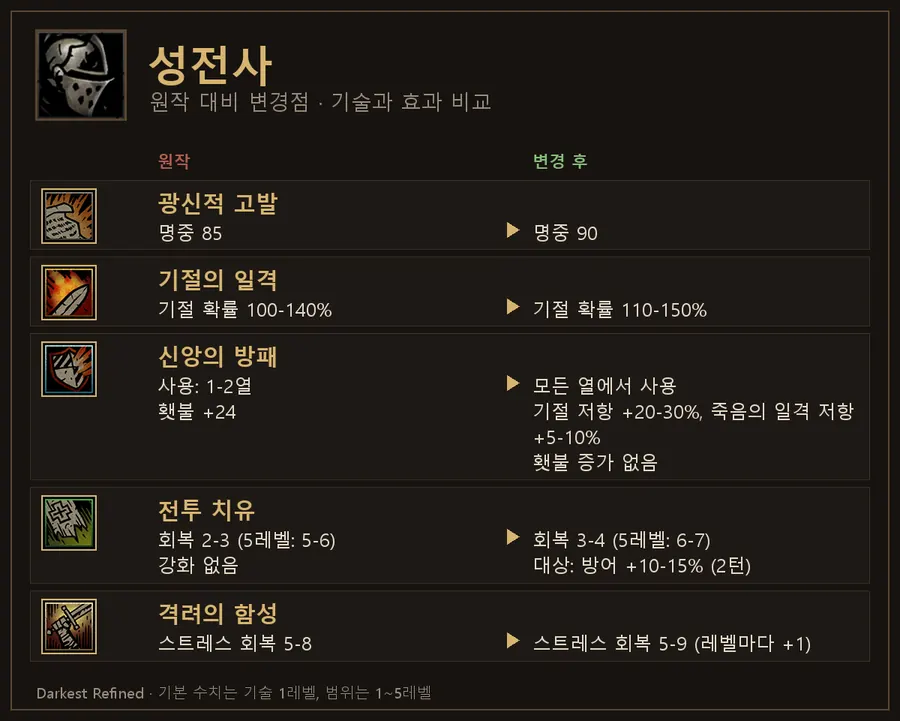
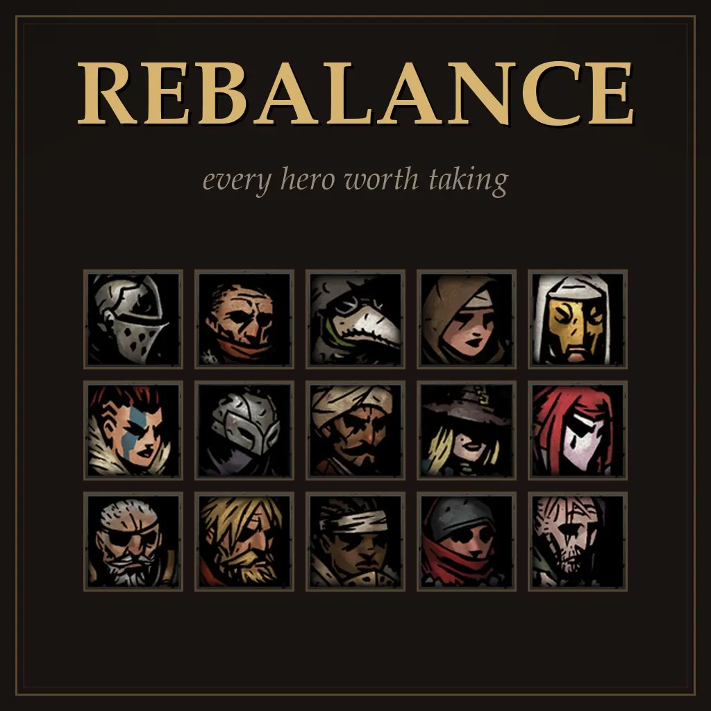
혼자 기획하고 운영했습니다. 구현은 AI의 도움을 받았습니다
2026.09부터 운영 중인 개인 모드입니다. 무엇을 바꾸고 어떤 값을 채택할지는 제가 정했습니다.
제가 한 일
- 굳은 조합 진단과 설계 원칙
- 비교 조건과 영웅 정체성 제약
- 수치의 채택, 기각, 실제 사용감 판정
- 창작마당 공개, 의견 답변과 업데이트
AI에 맡긴 일
- 원본 데이터 추출
- 항목별 공식과 계산 도구
- 모드 구현 보조
영웅과 기술마다 고를 이유를 만드는 밸런스
- 분석영웅은 스무 명, 파티는 늘 같은 셋
- 기준수치보다 정체성과 역할을 먼저
- 방향조합을 바꿀 때 막히는 이유를 푼다
- 제안 ①괴인: 합계는 그대로, 부담을 옮김
- 제안 ②조련사: 제안 수용 뒤 같은 날 재조정
- 검증중보병: 빠진 조건을 찾아 철회
- 운영공개, 응답, 계속 수정
영웅은 스무 명인데, 파티는 늘 같은 셋이었습니다
회복은 성녀, 신비학자, 스트레스 회복은 광대에게 몰려 있었습니다. 정답이 정해지면 고르는 재미가 사라집니다.
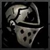
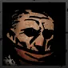
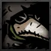
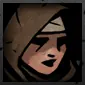
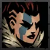
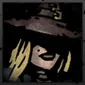
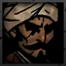
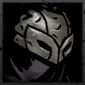
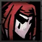
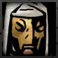
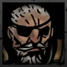
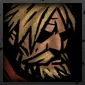
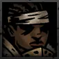
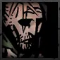
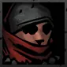
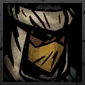
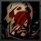
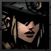
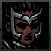
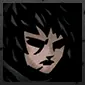
“자꾸 쓰던 조합으로 돌아가더라. 그래서 각자 개성은 살리면서 안 쓰던 기술이랑 조합도 써볼 이유를 만들고 싶었음.”
수치보다 먼저, 무엇을 고르게 할지와 영웅의 정체성을 정했습니다
판단 순서를 고정하고, 수치는 마지막에 정했습니다.
지킨 원칙 세 가지
정체성과 사용감을 보존합니다. 약점을 모두 지워 만능 영웅으로 만들지 않습니다.
기능을 더하면 피해, 명중, 사거리, 행동 비용을 함께 낮춥니다. 전체 난이도가 한쪽으로 쉬워지지 않게 하려는 것입니다.
같은 레벨, 적, 장신구, 후속 행동을 놓고 비교합니다. 단독 점수가 높아도 다른 기술을 지우면 고칩니다.
조합을 바꿀 때 막히는 이유 네 가지를 풀었습니다
새 영웅을 데려가려 해도 이 넷이 없으면 결국 같은 조합으로 돌아갑니다.
- 회복 부담을 나눌 동료
- 물리 공격을 돕는 약화
- 뒤에 있는 적을 끌어오는 기술
- 선택지를 더한 만큼 강한 기술은 하향
괴인: 합계는 그대로 두고, 부담을 지는 사람을 바꿨습니다
원작에서는 변신할 때마다 동료 세 명이 스트레스를 받았습니다. 이제는 자기 스트레스를 관리해 둔 만큼 변신을 씁니다.
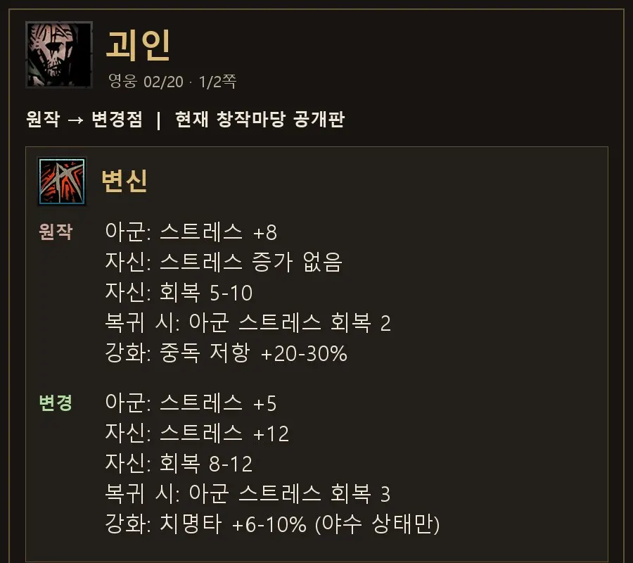
변신했다가 돌아올 때까지 생기는 스트레스, 동료 3명 기준
합계는 어느 쪽이든 18입니다. 원작은 동료 한 명당 +8, 돌아올 때 −2. 변경은 동료 한 명당 +5, 돌아올 때 −3, 괴인 자신 +12. 유지 비용(발동당 +6)은 같고, 다른 보정 전 값입니다.
조련사: 이용자 제안을 받아들인 뒤, 같은 날 다시 고쳤습니다
출혈 쪽으로 너무 기울자, 피해를 올려 주는 장신구를 낄 이유가 사라졌습니다. 문제는 받아들이고, 해법은 설계 목표에 맞췄습니다.
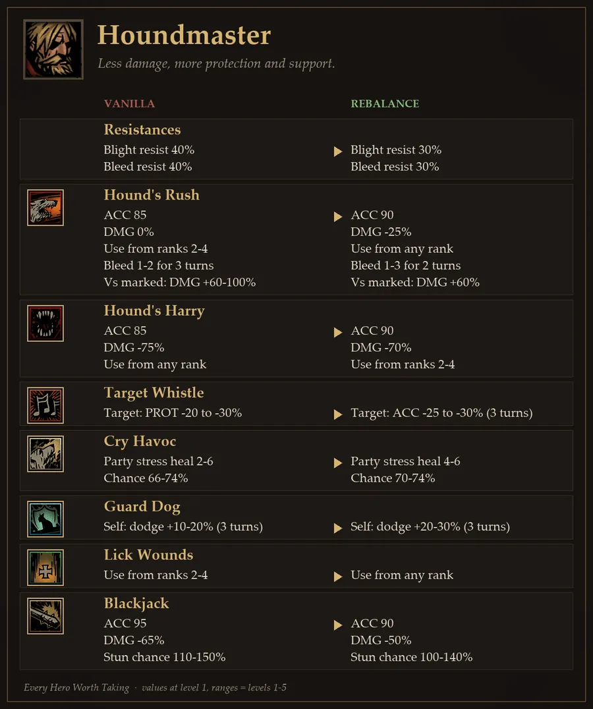
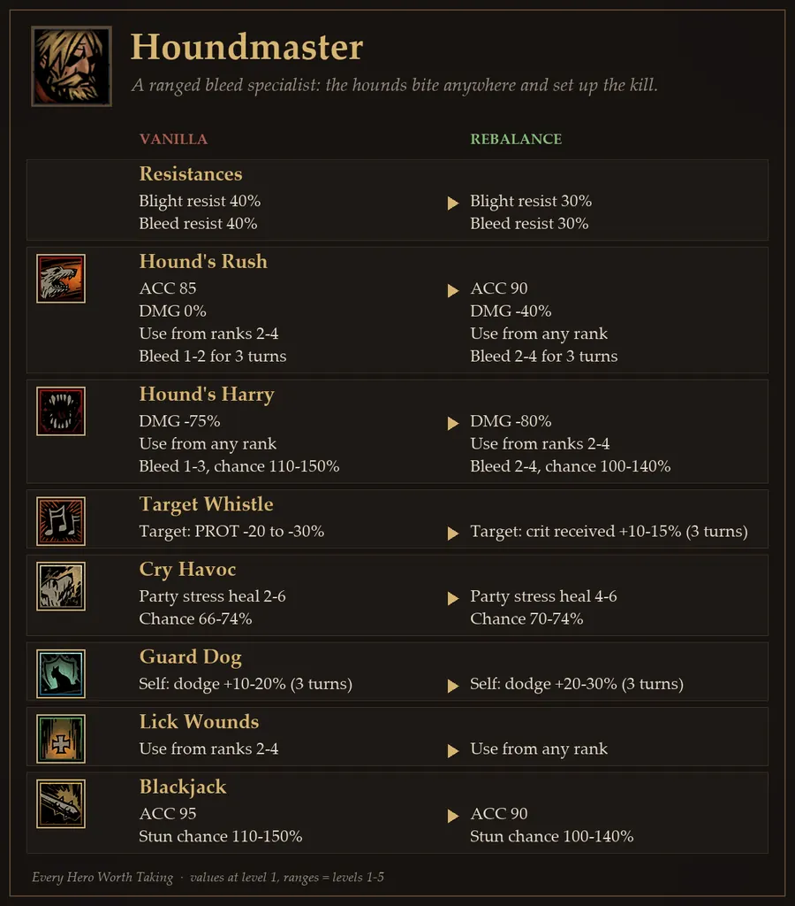
- 이용자 A
조련사의 피해를 더 낮추면 표식과 정찰 말고는 쓸 일이 없어집니다. 직접 피해를 낮추면서 출혈 피해를 강화해, 다른 장신구와 기술도 활용할 수 있게 해 보면 어떨까요?
- 본인제작자
제안대로 직접 피해를 줄이고 출혈을 강화해 2.0.7에 반영했습니다. 사냥개 돌진은 피해 −50%, 출혈 3~5, 3턴입니다.
- 본인제작자
추가 정정입니다. 2.5에서 다시 조정했습니다. 사냥개 돌진은 피해 −40%, 출혈 2~4, 3턴입니다.
사냥개 돌진의 직접 피해, 기본 공격을 100으로 본 값
기술 1레벨. 피해 보정 −25% → −50% → −40% → −20%. 11.06에 한 명 집중(돌진)과 여럿 출혈(습격)로 역할을 나눴습니다.
중보병: 내 계산에서 빠진 조건을 찾아 변경을 철회했습니다
반격을 한 턴 줄인 손실을 −1.3%로 계산했지만, 동료를 대신 맞으며 반격하는 경우가 빠져 있었습니다.
반격을 한 턴 줄였을 때의 손실 추정
−1.3%−14.6%
이 값만 보고 반격을 3턴 → 2턴으로 줄였습니다(09.29).반격을 3턴으로 되돌리고, 대가는 공격 범위로 옮겼습니다(09.30). 당시 모델로 지원 기술을 돌려 쓰는 운영을 비교한 값입니다.
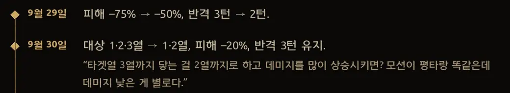
공개하고, 의견에 답하고, 계속 고치고 있습니다
2026.10.17 공개. 받은 의견은 수용, 재조정, 미채택으로 나눠 공개 답변을 달았습니다.
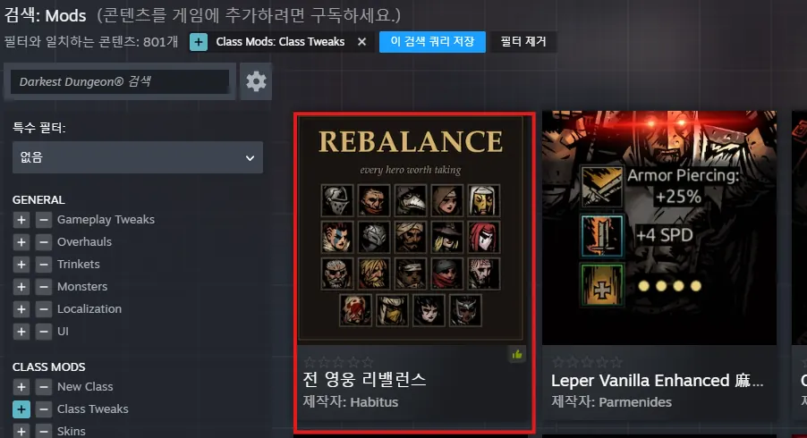
- 693창작마당 구독(통합판 234 별도)
- 50, 52이용자 의견, 제작자 답변
- 26공개 첫 주 업데이트 10번 동안 카드가 바뀐 횟수(20명 중 12명)
- 53업데이트 노트